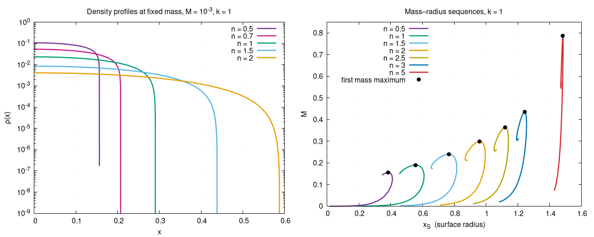
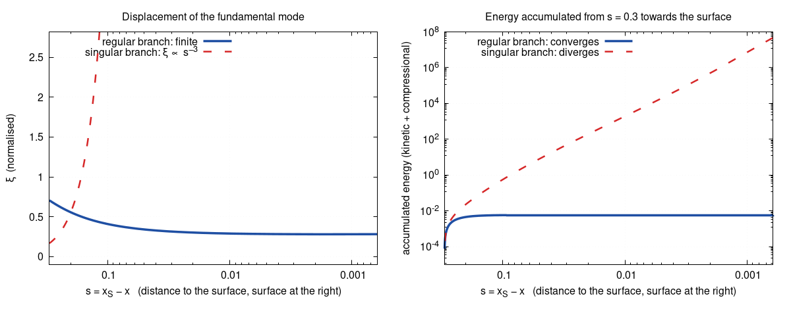
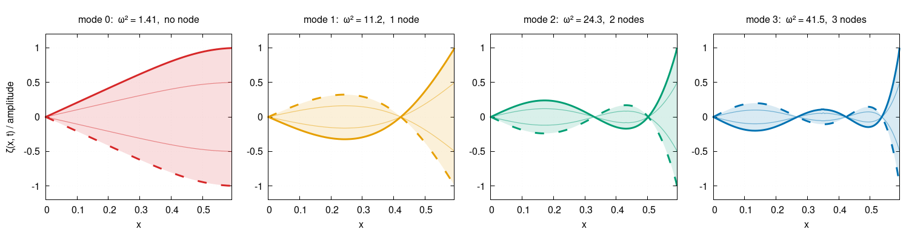
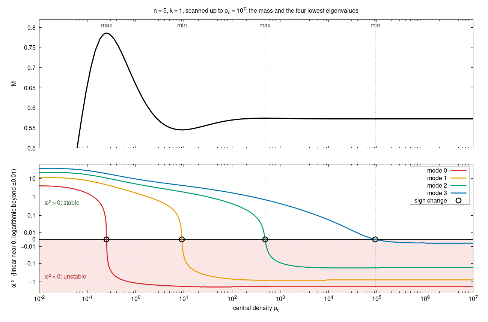
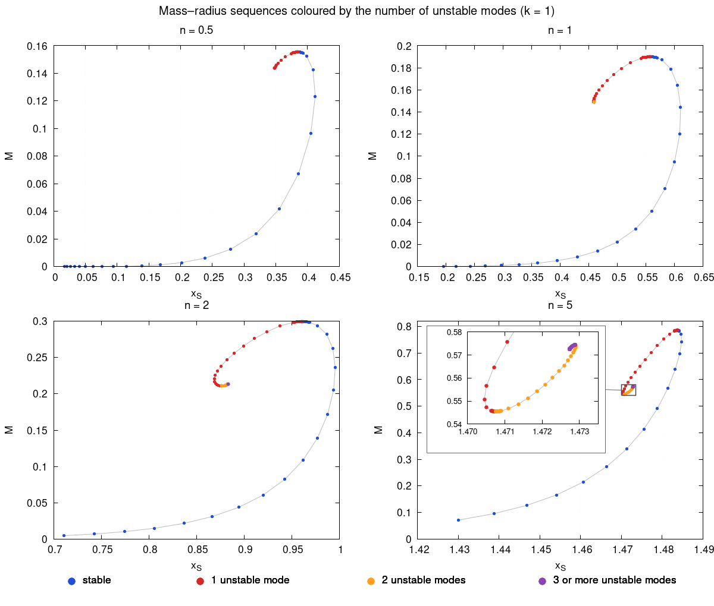

Radial stability of stars in anti-de Sitter space
Building static perfect-fluid stars with a negative cosmological constant, and finding out which of them survive a small radial push.
What is a Λ star?
This project reproduces and extends the draft “Λ stars: the nontrivial influence of the cosmological constant on stellar objects” (Lopes & Okawa). The question is simple to state: what does a star look like when the cosmological constant is negative, so that spacetime is anti-de Sitter (AdS)?
Moving the cosmological constant to the matter side of Einstein's equation turns it into an effective fluid, with density \(\rho-L\) and pressure \(P+L\), where \(L=-\Lambda/\kappa_G\). For low-density stars this behaves like the bag constant of the MIT bag model, so these objects resemble quark stars in flat spacetime.
The draft sets out how to construct the stars. This project adds their radial stability: for each family of stars, which oscillation modes grow, and at which central density does that start?
A static fluid ball
The star is static and spherically symmetric, made of a perfect fluid with a polytropic equation of state. I use units with \(l=1\) and \(\kappa\equiv\kappa_G l^2=8\pi\).
Metric (the AdS boundary is at \(x=\pi/2\), and the areal radius is \(l\tan x\)):
\begin{equation} ds^2=\frac{l^2}{\cos^2x}\Big(-f(x)^2dt^2+g(x)^2dx^2+\sin^2x\,d\Omega_2^2\Big) \end{equation}Field equations and matter, with \(\Lambda=-3/l^2\):
\begin{equation} G_{\mu\nu}+\Lambda g_{\mu\nu}=\kappa_G T_{\mu\nu},\qquad T_{\mu\nu}=(\rho+P)u_\mu u_\nu+P g_{\mu\nu} \end{equation}Equation of state:
\begin{equation} P=k\,\rho^{1+1/n} \end{equation}The tt and xx components, together with energy-momentum conservation, reduce to two first-order ODEs for \(g(x)\) and \(\rho(x)\):
The time function \(f\) decouples. It is recovered afterwards, with \(f(x_S)=1/g(x_S)\) so that \(f\to1\) at the boundary.
Boundary conditions
A star is a solution on \([0,x_S]\) with a regular centre and a surface where the density vanishes. The surface radius \(x_S\) is itself unknown. Outside, the solution is exactly Schwarzschild–AdS.
Centre (this also gives \(\rho'(0)=0\)):
\begin{equation} g(x)=1+\frac{\kappa\rho_c}{6}x^2+O(x^4) \end{equation}Surface and exterior, with \(\mu=2GM\):
\begin{equation} \rho(x_S)=0,\qquad g(x)^{-2}=1-\mu\,\frac{\cos^3x}{\sin x}\quad(x>x_S) \end{equation}Mass, read off from the surface value of \(g\):
\begin{equation} M=\frac{\big(1-g(x_S)^{-2}\big)\sin x_S}{2G\cos^3x_S} \end{equation}One more condition closes the problem: either the central density \(\rho_c\) or the mass \(M\) is prescribed.
Solving it with W4
I solve the whole boundary-value problem at once, as a nonlinear system \(F(u)=0\), with the W4 method. It follows a damped second-order flow, discretised with explicit Euler, using the UDL decomposition \(J=UDL\) of the Jacobian:
with \(0<\Delta\tau<1\). Near a solution the error eigenvalue is \(1-\Delta\tau\).
W4 as a damped oscillator
The iteration behaves like a damped oscillator that settles into the solution. Near a solution \(F\approx J\,\delta x\) with \(J=UDL\), so \(D^{-1}U^{-1}F\approx L\,\delta x\). In the variable \(q=L^{-1}p\) the error obeys \(\delta x_{n+1}=\delta x_n+\Delta\tau\,q_n\) and \(q_{n+1}=(1-2\Delta\tau)\,q_n-\Delta\tau\,\delta x_n\). In continuous time this is \(\ddot a+2\dot a+a=0\) for every component \(a\) of the error, a unit mass on a unit spring with friction coefficient 2.
That friction is exactly critical damping: the error returns to zero as \((c_1+c_2t)\,e^{-t}\), as fast as possible without overshooting or oscillating. The discrete eigenvalue is \(1-\Delta\tau\), twice. The factors \(L\) and \(U\) cancel the Jacobian, so every component behaves like this same oscillator whatever \(J\) is. The settling belongs to the solver, not to the star: W4 converges to unstable stars as well as stable ones.
The discretisation
The unknown vector is \(u=[x_S,\,g_0,w_0,\,g_1,w_1,\dots,g_N,w_N]\), on a mesh \(x=x_S\,s^{\mathrm{grade}}\) with \(s\) uniform in \([0,1]\). A grade above 1 clusters nodes near the centre, which large central densities need. Each interval uses the midpoint rule, so \(\tan x\) and \(1/\sin x\) are never evaluated at \(x=0\). The scheme is second order.
A change of variable
Near the surface \(\rho\sim(x_S-x)^n\), which is singular for \(n<1\). I evolve \(w=\rho^{1/n}\) instead, which crosses zero linearly for every \(n\), and recover \(\rho=|w|^n\) afterwards.
Why the order of the unknowns matters
It does not change the solution, nor the determinant or the eigenvalues of the Jacobian, since reordering the unknowns is a similarity transformation. It changes the UDL factorisation. W4 uses that factorisation without pivoting, which needs the trailing (bottom-right) principal minors to be non-zero, and an invertible matrix can have a zero one. The iteration also applies \(L^{-1}\), \(U^{-1}\) and \(D^{-1}\) at every step, so its path to the solution depends on how well conditioned those factors are, even though its fixed point does not.
With \(x_S\) first and \(g,w\) interleaved, \(\mathrm{cond}(L)\approx60\) and W4 converges from poor starting guesses. With \(x_S\) last there is a zero pivot, and grouping all \(g\) before all \(w\) fails too. The interleaved order with \(x_S\) last has \(\mathrm{cond}(L)\approx10^8\).
Finding and checking solutions
A run starts from a simple linear profile and, if W4 fails, retries from a
smaller star with a smaller step. Families of stars are followed by
continuation in \(\rho_c\) or in \(M\). For \(N>100\) a sparse Jacobian
(seven-colour column colouring) and a sparse UDL keep it fast. I compare
the solutions with an independent shooting integration
(solve_ivp, rtol 1e-12).
The family scans use \(N=2000\) with grade 2 and follow \(\rho_c\) from 0.01 up to \(10^7\). The \(n=1\) and \(n=0.5\) scans stop earlier, at \(1.1\times10^6\) and \(2.5\times10^4\). Below, “the range scanned” refers to this.
What the stars look like
Fix a small mass, \(M=10^{-3}\) with \(k=1\), and vary the polytropic index \(n\). The left panel below shows the result. As \(n\) grows the central density drops and the star gets larger. Every profile ends in a sharp drop at the surface.

The right panel follows each family beyond the low-mass regime. Along a curve the mass rises to a maximum and then curls back. Both the maximum mass and the radius at which it occurs grow with \(n\): from \(M_{\max}=0.1555\) at \(x_S=0.3848\) for \(n=0.5\), to \(0.7859\) at \(x_S=1.484\) for \(n=5\). The AdS boundary is at \(x=\pi/2\approx1.571\).
| n | ρc | xS | (g(xS) − 1) × 103 |
|---|---|---|---|
| 0.5 | 0.1063 | 0.1561 | 6.26 |
| 0.7 | 0.05310 | 0.2070 | 4.59 |
| 1 | 0.02322 | 0.2902 | 3.09 |
| 1.5 | 0.008488 | 0.4384 | 1.75 |
| 2 | 0.004103 | 0.5883 | 1.04 |
The constant \(k\) matters too. For \(n=1\) and the same mass, \(k=0.5,\,1,\,2\) give \(x_S=0.2523,\,0.2902,\,0.3328\).
Will it stay a star?
Having a static solution does not mean it is stable. To test it, I perturb the fluid with a radial Lagrangian displacement \(\zeta=\xi(x)\,e^{i\omega t}\) and linearise the Einstein equations. The time-time, time-radial and radial-radial components and the Euler equation reduce to one master equation for \(\zeta\). The metric perturbation \(f_1\) drops out. With \(h=\rho+P\), \(c_s^2=dP/d\rho\) and \(\Theta=c_s^2h\):
Here \(K\), \(\sigma\) and \(\beta\) are built from the background star. They are listed in the technical notes.
This is a Sturm–Liouville problem. With \(E=f g\sin^2x/\cos^4x\) and \(W=hg^2/f^2\), every mode satisfies the variational principle
A negative \(\omega^2\) means the mode grows, so the star is unstable. I discretise the problem with linear finite elements on the star's own grid. That gives a symmetric generalised eigenproblem with tridiagonal matrices. The number of unstable modes comes from a Sturm count of the negative eigenvalues, and a star is flagged unstable if any \(\omega^2<-10^{-6}\).
What happens at the surface
The master equation is second order, so it needs one condition at each end. At the centre it is \(\xi(0)=0\). The surface is harder, because there the equation is singular: the density vanishes, so \(\Theta\sim s^{n+1}\to0\) with \(s=x_S-x\), and the coefficient of the highest derivative goes to zero. Near a singular point like this the solutions are power laws, \(\xi\sim s^\alpha\), and the exponents satisfy \(\alpha(\alpha+n)=0\).
That leaves two behaviours. The regular branch, \(\alpha=0\), tends to a finite value at the surface. The singular branch, \(\alpha=-n\), diverges there. A mode needs finite energy, because \(\omega^2\) is a ratio of energy integrals (the variational formula above), so the energy should decide between them. The two panels below check this for \(n=3\).

The regular branch stays finite and its energy converges. The singular branch grows like \(s^{-n}\) and its energy diverges, so it is discarded. The regular branch also gives \(\Delta p=-\Theta Q\to0\) automatically, so the pressure perturbation vanishes at the surface without imposing anything, and \(\xi\) itself is free there: the surface oscillates. The technical notes have the full six-panel version, which also confirms that \(h\), \(\Theta\) and \(\Delta p\) vanish as the expected powers of \(s\).
Following the modes
For each star the problem gives a ladder of eigenvalues \(\omega_0^2<\omega_1^2<\dots\). The star is stable if all of them are positive. Two questions are worth a look: what a mode is, and how the ladder moves as the central density grows.
What a mode looks like
Here are the four lowest modes of a stable \(n=1\) star with \(\rho_c=0.555\). The displacement is \(\zeta(x,t)=\xi(x)\cos\omega t\), so every point of the star moves back and forth at the same frequency with a fixed profile.

Because the problem is Sturm–Liouville, mode \(i\) has \(i\) nodes, the points where the curves cross and the fluid does not move, and \(\omega_i^2\) increases with \(i\). Here \(\omega^2=1.41,\,11.2,\,24.3,\,41.5\), in units where \(l=1\) and time is the boundary time. In these modes the displacement is largest at the surface, which is free to move.
The ladder along a sequence
A larger polytropic index makes the changes easier to see, because in the range I scanned the family has more turning points. So I follow \(n=5\), \(k=1\), the largest index I scanned, as \(\rho_c\) grows. Its stars have \(x_S\approx1.48\), close to the AdS boundary at \(\pi/2\).

Read the figure from left to right. At small \(\rho_c\) all four eigenvalues are positive, so the star is stable. Each curve later drops into the shaded unstable region at a ringed point. The lowest one crosses zero at \(\rho_c=0.2499\), exactly where \(M(\rho_c)\) peaks. A zero mode is a static perturbation, a neighbouring equilibrium, and in a one-parameter family those exist where the mass is extremal. After the crossing \(\omega_0^2\) keeps falling and settles near \(-1.77\). The pattern then repeats: each next eigenvalue crosses zero at the next extremum of \(M\), and settles near \(-0.80\) and \(-0.17\). The fourth is still moving at \(\rho_c=10^7\), where it is \(-0.005\). The four crossing densities are in the \(n=5\) row of the table in section 7. In the range scanned, each crossing adds one unstable mode and none is removed, so the count goes \(0\to1\to2\to3\to4\).
Four is what the scan covers
Four extrema is what \(\rho_c\le10^7\) contains. It is not a claim that there are no more. \(M(\rho_c)\) oscillates around a limit near \(0.5727\), the excursions shrink quickly, and the spacing of the extrema in \(\rho_c\) grows. There could be further extrema at larger \(\rho_c\), each fainter and harder to resolve. By the same turning-point argument each would be expected to bring another mode through zero, but I have not computed them.
Checks and other indices
How I checked it
- The linearised equations and their reduction to the master equation were verified symbolically. The residuals vanish at random background points to about 1e-12 to 1e-14.
- The W4 profiles agree with the independent shooting integration (section 3).
- The turning-point rule holds. For \(n=1\) the first mode crosses zero at \(\rho_c=0.89226\), where the mass peaks at \(M_{\max}=0.190024\), and the two agree to the five digits I resolved. For \(n=5\) the crossing is at \(0.249865\) and the maximum-mass point on the \(\rho_c\) grid is at \(0.249883\). This is a non-trivial check of the whole chain, because \(\omega^2\) comes from the perturbation equation and \(M\) from the static equations.
- The eigenvalue converges at second order with the grid: the differences shrink by about 4 at each doubling of N.
| N | 100 | 200 | 400 | 800 | 1600 | 3200 |
|---|---|---|---|---|---|---|
| ω0² | 1.744278 | 1.744735 | 1.744846 | 1.744873 | 1.744880 | 1.744881 |
Other polytropic indices
The other indices behave like \(n=5\): each time a mode turns unstable, \(M(\rho_c)\) has an extremum there. In the range scanned, the number of unstable modes at large \(\rho_c\) tends to grow with \(n\).
| n | M at 0→1 | 0→1 | 1→2 | 2→3 | 3→4 |
|---|---|---|---|---|---|
| 0.5 | 0.1555 | 1.390 | – | – | – |
| 1 | 0.1900 | 0.8923 | 421.7 | – | – |
| 1.5 | 0.2406 | 0.6217 | 35.71 | – | – |
| 2 | 0.2994 | 0.4826 | 20.75 | 2.384×106 | – |
| 2.5 | 0.3643 | 0.4016 | 15.80 | 5668 | – |
| 3 | 0.4348 | 0.3492 | 13.25 | 1690 | – |
| 5 | 0.7859 | 0.2499 | 9.133 | 484.2 | 9.374×104 |
Putting these counts back into the mass–radius sequences of section 4 gives one picture. Each point is a star, coloured by its number of unstable modes. Every family starts on a blue branch and turns red at its first mass maximum, and the later colour changes sit near the end of the spiral. Larger \(n\) shows more colours, and \(n=0.5\) only reaches red in the range scanned.

Limits of this analysis
- The scans stop at \(\rho_c=10^7\) (earlier for \(n=1\) and \(n=0.5\)), so I cannot say whether more extrema of \(M\), and more unstable modes, appear beyond.
- The perturbations use the barotropic law \(\delta P=c_s^2\,\delta\rho\), not a fixed-rest-mass adiabatic law.
- Frequencies are measured in boundary time, with \(f\to1\) at the boundary. The sign of \(\omega^2\) does not depend on that normalisation.
- Only \(n=1\) was scanned in \(k\) (0.5, 1 and 2). The other families use \(k=1\).
- For \(n=0.5\) the scan lists a few tiny extrema of \(M\) at \(\rho_c\sim10^4\). They are numerical noise on a flat plateau, not real turning points.
I never had the chance to look into the stability of these stars before. This period finally gave me the opportunity, and going from a static solution to a full ladder of oscillation modes feels like another small victory.